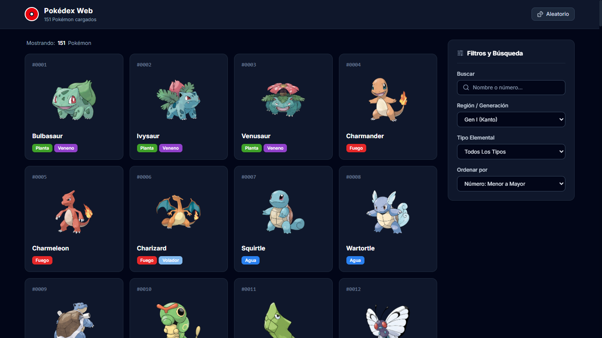
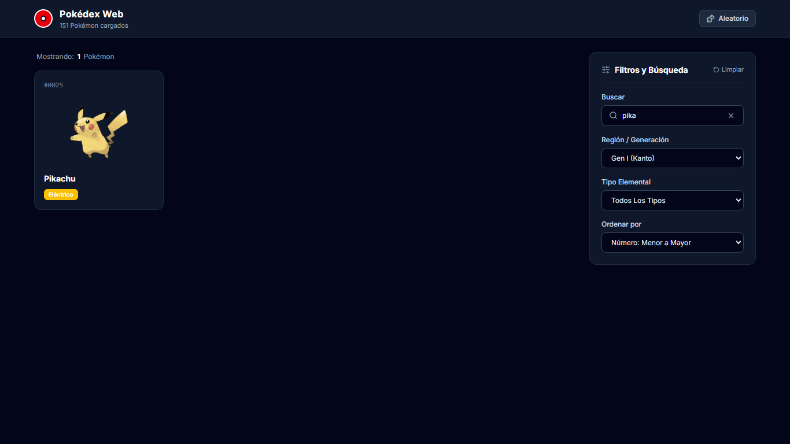
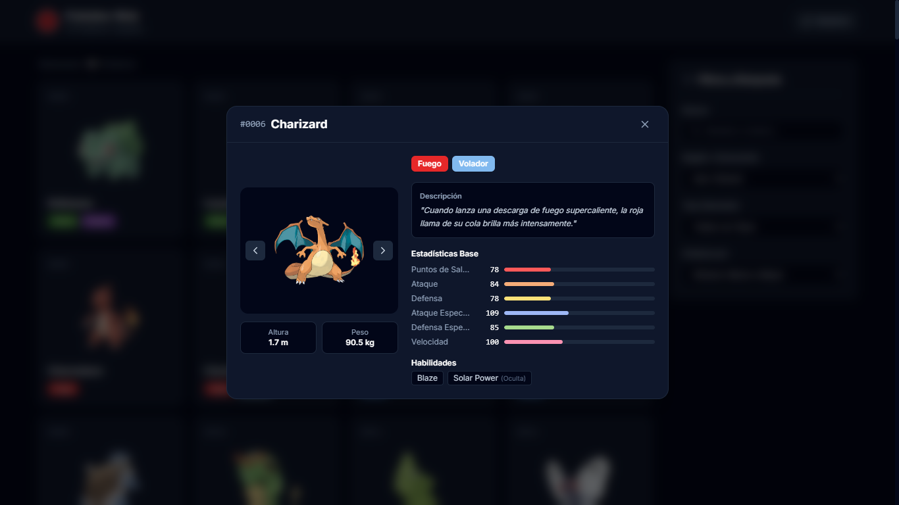

Estudiante: Ángel Alejandro Villón Panimboza
Fecha: Septiembre 2026
Asignatura: Desarrollo de Aplicaciones Web
Tema: Tarea - Consumo de APIs (PokéAPI)
Para esta práctica se desarrolló una aplicación web con React, TypeScript y Tailwind CSS que consume los servicios REST de la API pública PokéAPI. La interfaz cuenta con una maquetación semántica de dos columnas compuesta por un catálogo principal de tarjetas (<main>) y un panel lateral derecho (<aside>) para búsquedas en tiempo real y filtrado por tipo o región. Al hacer clic sobre cualquier Pokémon, se abre una ventana modal con sus detalles, medidas y estadísticas base.


